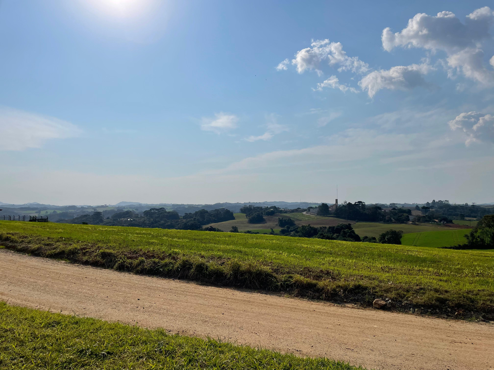

Inicialmente, diversas pessoas pensam em não ajudar no pensamento que não faz diferença só uma pessoa fazer a os 3 R's, todavia se todos criassem consciência que sua ajuda importa, mesmo sendo minima, ajudaria em muito para nós melhorar o planeta, claro que não seria um tarefa fácil, fato que está difícil de reverter essa situação por causa das indústrias!
Qualquer ajuda é bem vinda! Um exemplo forte é ter um dia vegano. Não estou pedindo para que você deixe de comer carne para sempre, mas pelo menos um dia semanal deixe de comer sua preciosa carne, que tal? Isso ajudaria muito com a sustentabilidade, pois, estatísticas apontam que existem mais de 220 milhões de bois no Brasil, sim, tem mais boi do que humano em nosso país! Será que precisamos de tudo isso? Infelizmente, a agropecuária vem aumentando muito o nível de desmatamento, sendo a segunda principal responsável por tal feito, pois para criar os animais precisa de espaço no campo, e para criar espaço eles cortam hectares de florestas para isso. Então eu lhe peço que crie o hábito de não comer carne algum dia da semana, para que melhore nosso meio-ambiente e sustentabilidade.
Outros argumentos pode ser mais fáceis, sendo a economização de água e luz, para que haja maior racionalização de itens que muitas pessoas não se importam, pois algum dia infelizmente irá acabar se continuar do jeito que estamos! Existe diversas formas de racionalizar água e luz, como por exemplo fechar/desligar quando não estiver usando ou estiver no local.
Um ponto bônus é que com sua ajuda, a iniciativa de muitas ONGs serão facilitadas com sua percepção de sustentabilidade! Com tais habilidades cognitivas, o meio-ambiente agradece de forma espetacular, já que, nossa casa é a natureza, que se não cuidarmos bem, tudo voltará de formas horríveis para nossa sociedade. A sua responsabilidade social tem a principal característica, ajudar sua próxima geração, filhos, sobrinhos, primos e por aí vai! Como muitos dizem, de grão em grão a galinha enche o papo.